The green fan, adapted to metric and Torx
Updated finished models: All three Bondhus fans, native FreeCAD, print STEP and 100% infill modifier projects. The earlier revision below is preserved as history.
The Bondhus 13189 and 33034 sets now use the green rack’s swept handle arrangement, flatter T-bars, long straight sleeves, filled tip base and broad print-plane gussets. Each is sized for its own tools; these are separate holders.
Download both editable FreeCAD models and exports
Unzip and run SETUP_MATCHED_FANS.FCMacro once in FreeCAD. Edit yellow cells in 01_GlobalParameters and 02_KeyLayout; press F5. The included module is required for custom-feature rebuilds. Full recomputes can take several minutes.
Front-on shaft X-ray and print STEP files
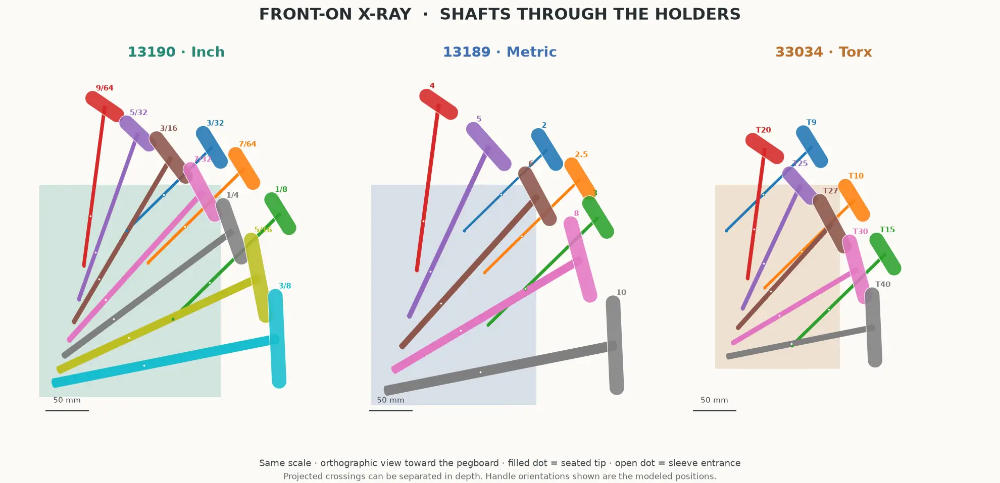
Orthographic front view, all three at the same scale. Filled dots mark seated tips; open dots mark sleeve entrances. Projected crossings can be separated in depth. Tap the image for full resolution.
Holder only, in the checked tip-end-down print pose, millimetres, nominal and unscaled. Each STEP reloads as one valid solid. Use the STEP downloads here in preference to the earlier bundle exports. Supports, filament compensation and brim still need slicer review; the metric rack has only 3.22 mm nominal bed-edge clearance. Torx full-shank fit remains provisional.
13189 Metric — eight tools
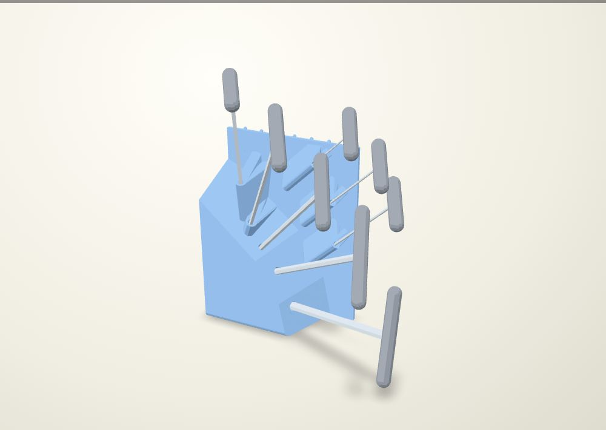
The hex flats follow the T-handle axis. +0.38 mm total across-flats clearance comes from the selected 3C/5C coupon fit; other sizes and long guides still need a physical test. A nominal 2 mm hex can rotate inside the 2.38 mm AF socket, so its shown handle clocking is also provisional.
Holder: 196.0 × 97.9 × 262.3 mm (width × depth × height, including pegs). Straight guides: 60–120.0 mm, plus the 3 mm lead-in.
Front, plan and empty-holder views
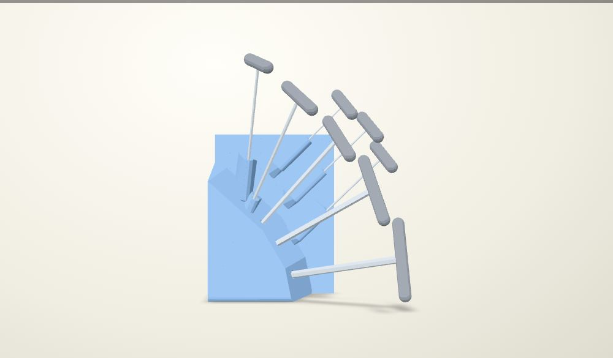
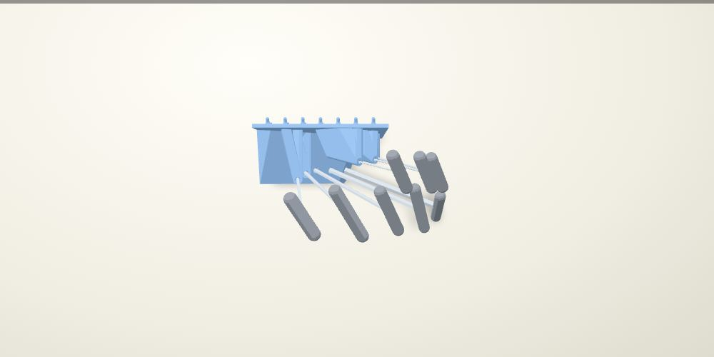
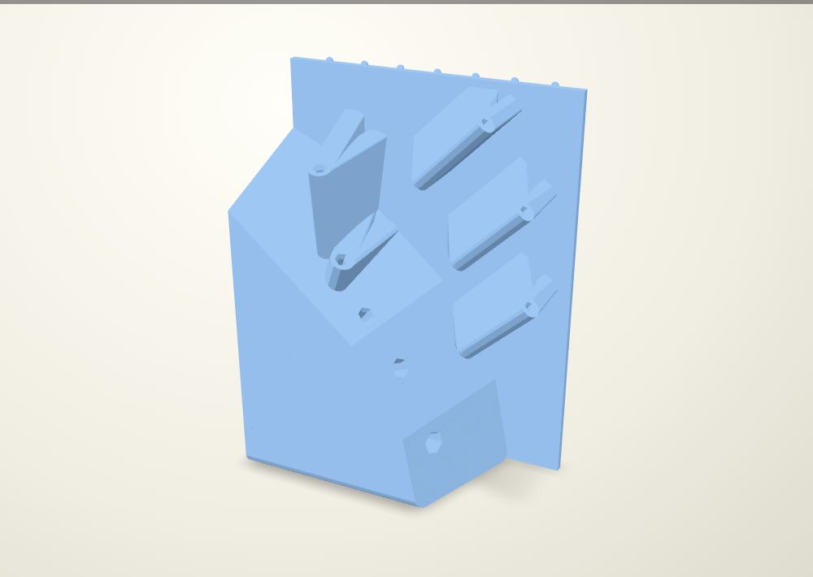
Tip-end print pose
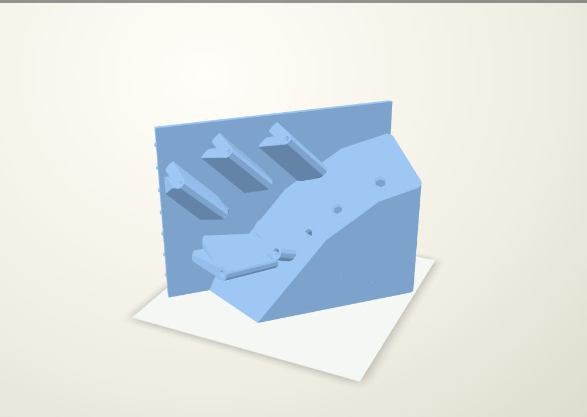
Nominal, unscaled envelope: 249.6 × 220.4 × 196.0 mm, at 45° bed yaw. Flat native bed contact: 177.6 cm². Minimum nominal edge margin: 3.22 mm. Compensation, brim and supports require a new slice; the metric rack is particularly close to the bed edge.
Native FCStd only — install the module from the bundle first.
33034 Torx — eight tools
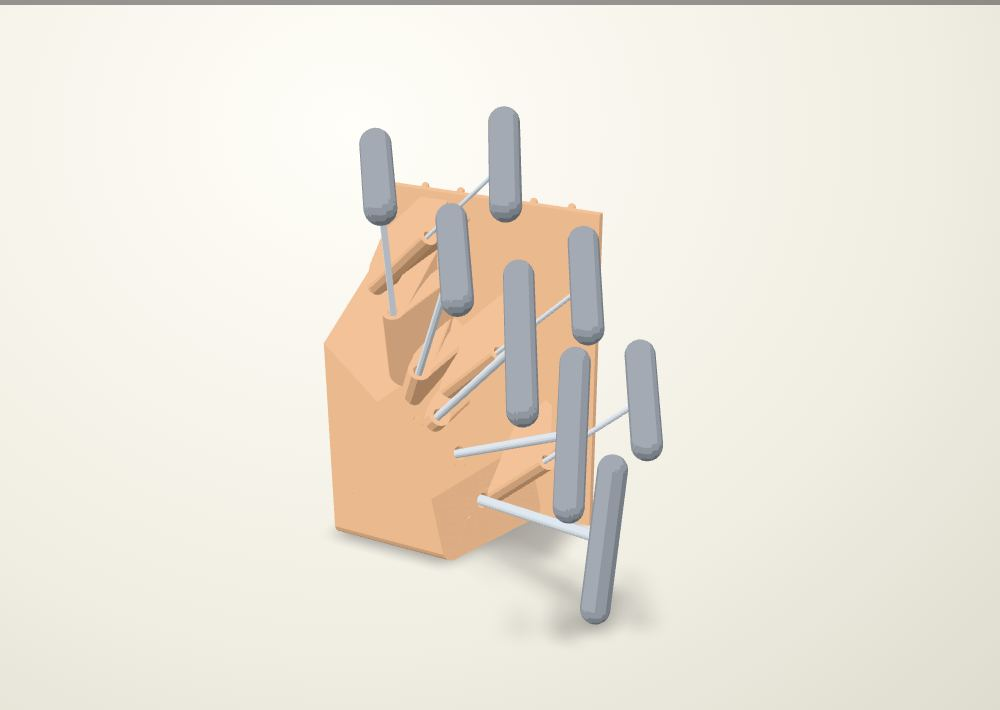
Torx fit is provisional. The circular sockets use catalogue tip envelopes, not measured full shanks. They do not lock handle rotation. The renders show intended handle placement. Measure the actual shanks and test fit before manufacturing this holder.
Holder: 148.0 × 97.6 × 219.0 mm (width × depth × height, including pegs). Straight guides: 60–79.8 mm, plus the 3 mm lead-in.
Front, plan and empty-holder views
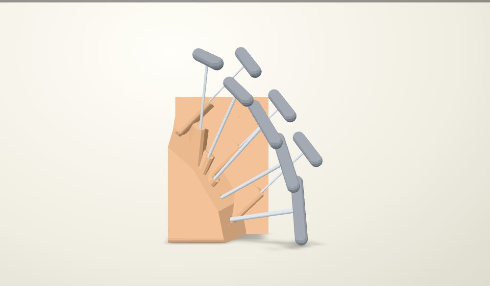
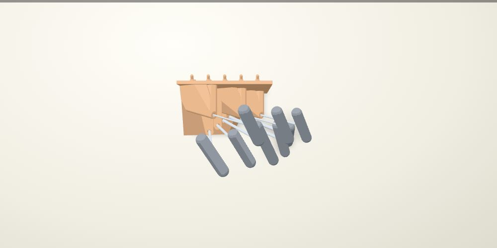
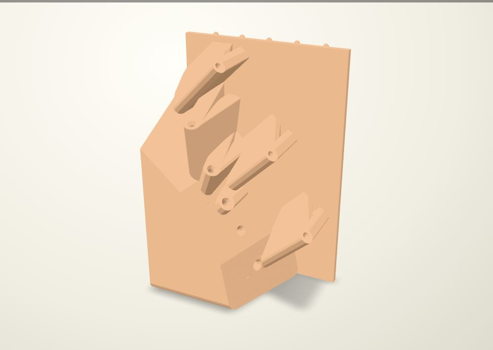
Tip-end print pose
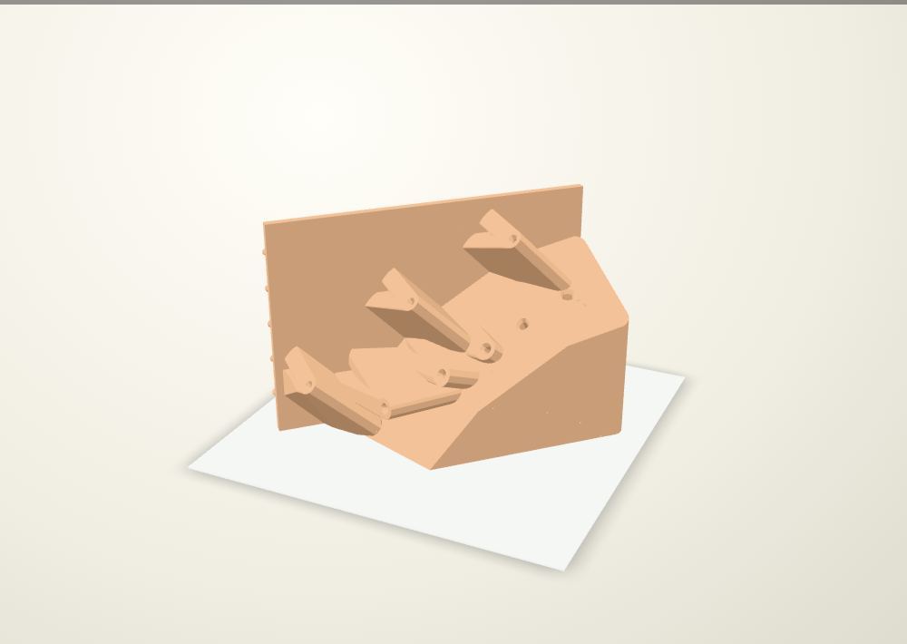
Nominal, unscaled envelope: 218.7 × 190.9 × 148.0 mm, at 45° bed yaw. Flat native bed contact: 142.2 cm². Minimum nominal edge margin: 18.66 mm. Compensation, brim and supports require a new slice; the metric rack is particularly close to the bed edge.
Native FCStd only — install the module from the bundle first.
One matching family
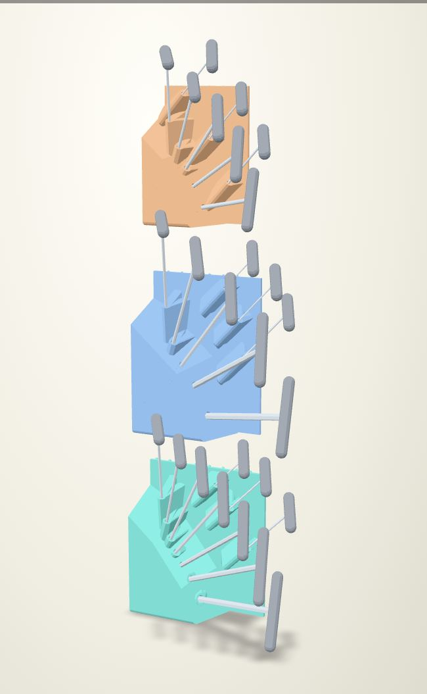
The green inch holder is unchanged. The new stack has 330.2 mm then 304.8 mm between top-hook datums, from bottom to top, on the 25.4 mm peg grid. The smaller tools tuck above and behind the main fan; the staggered shaft tips have independent centres.
Every shaft rises at least 10° toward its handle. Each new holder has 60 mm minimum engagement, growing with shaft size, a 3 mm axial lead-in widened 1.5 mm per side, below-floor 1 mm vents, 8 mm base rounds and tapered gussets broadened 12 mm per side and 16 mm toward the tip-end bed face.
Checks and limits
All three bodies are valid single solids. All 26 represented tools pass stored-tool and continuous axial socket-release checks against the native holders; all 26 two-finger pinch approaches clear the represented neighboring tools and holders. New entrance and vent probes are clear. Board-side geometry matches each new rack’s generated receiver. Parameter edits, save/reopen and live feature restoration pass in FreeCAD 1.1.3.
Reference tools use catalogue lengths and an assumed 18 mm grip diameter. The Torx shaft dimensions and clocking remain provisional. These checks do not qualify subsequent free-hand removal, whole-rack installation, printed fits, supports or loads. The new models have not been sliced. The native bed poses are unscaled; no previous slice estimate or FEA result transfers.